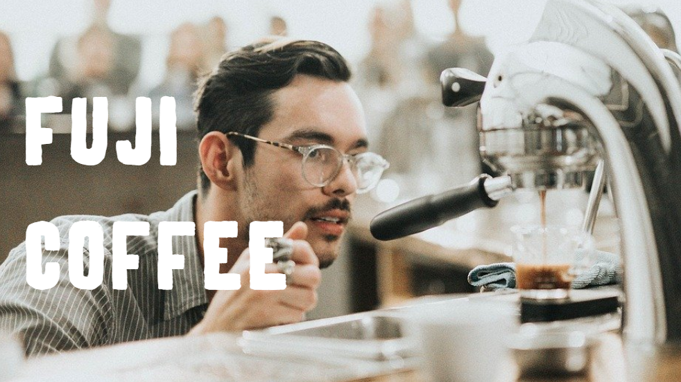

ABOUT
・山梨県富士吉田市出身 1996年生まれ 国士舘大学経済学科所属
・フィリピンに4か月間留学=>4か月半ヨーロッパとアジアを放浪。
・テックアカデミーにて、フロントエンドを4ヵ月学ぶ。(HTML,CSS,Javascript,Bootstrap,jquery,slack,Gyazo,cloud9)
・現在はUdemyを使ってjavascriptを勉強中です。
・自分で考えて動く行動力と、物事を様々な視点から考え相手の立場になれることが強みです。
あがり症なので、人前で話すことが苦手です。
・1年後はHTML,CSS,Javascript,その他フレームワークなどをしっかり使いこなせるようになりたいと考えています。
10年後は、フロントエンドエンドだけでなくデザインも担当できる人材になりたいと考えています。
PORTPHOLIO

・pcのみ対応です。
・fullpage.js,bootstrap,javascriptを使って作成しました。
・工夫した点としては、カフェはコンテンツ数が限られてくるのでシンプルに仕上げることを意識しました。
・ボタンやリンクにマウスが乗った時のアニメーションにて操作性を上げました。
・1,2ページ目の背景写真を少しずつズームにするアニメーションで
違和感を作り、ページへの滞在時間を伸ばそうと考えました。
・3,4ページ目はボタンやリンクがあり、アニメーションを付けると操作性が下がると考えたので
ズームなどのアニメーションは付けませんでした。

・スクールにてbootstrapを使って実装したお問い合わせページです。
・グリッドシステムを使って、レスポンシブルデザインにしています。